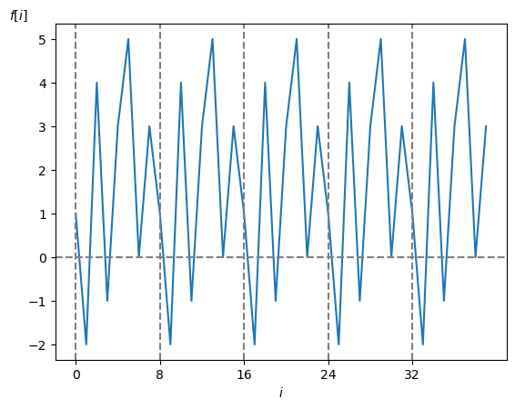
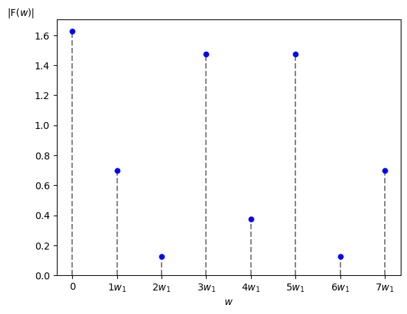
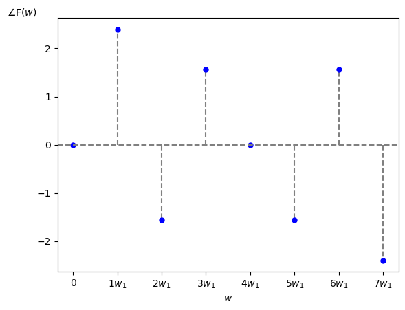
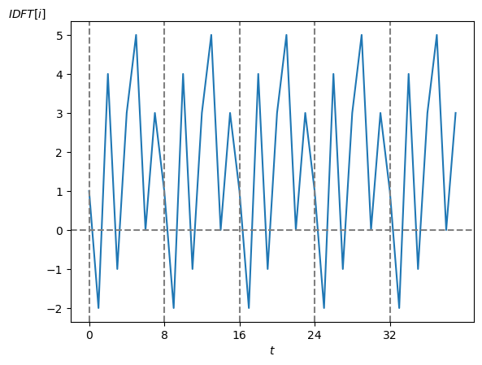

では具体例を示して視覚的にスペクトルを見てみましょう。
まず今回は周期性時間領域ディジタル信号として周期 $\textrm{N}=8$ [点]、サンプリング周波数 $f_s = 1$ [Hz]、サンプリング角周波数 $w_s = 2\pi$ [Hz]、サンプリング間隔 $\tau = 1$ [秒]、基本角周波数 $w_1 = w_s/\textrm{N} = 2\pi/8$ として
\[ f[i] = [1,\ -2,\ 4,\ -1,\ 3, 5, 0, 3] \]を考えます(図1)。

この $f[i]$ から求めた振幅・位相スペクトルは以下の様になります。
前ページで説明したように振幅・位相スペクトルは $w = k\cdot w_1 = k \cdot w_s / \textrm{N}$ [rad/秒] の所にだけ値があるディジタル信号になります。
なお今回はグラフの横軸を角周波数 $w$ [rad/秒] としていますが、横軸を周波数 $f$ [Hz] にしたり波長 [m] にする場合も実際には多いです。
また形式的にナイキスト角周波数 $w_s/2 = (\textrm{N}/2) \cdot w_1$ [rad/秒] より高い角周波数を持つ高調波成分もグラフ上に表れていますが、DFT 係数は複素共役の関係性を持っていますので実際のスペクトル図ではそれらの余分な高調波成分(今回の例では $5\cdot w_1$ [rad/秒]以上の高調波成分)は省略されることが多いです。


それで上のスペクトルから IDFT を使って復元した信号は次の様になります。
当然ですが元の信号の波形に復元されます。

参考までに、上のグラフを描画したプログラムはこちらです。